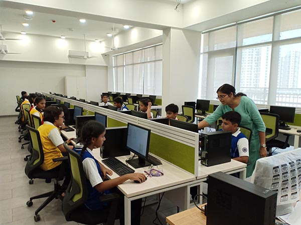
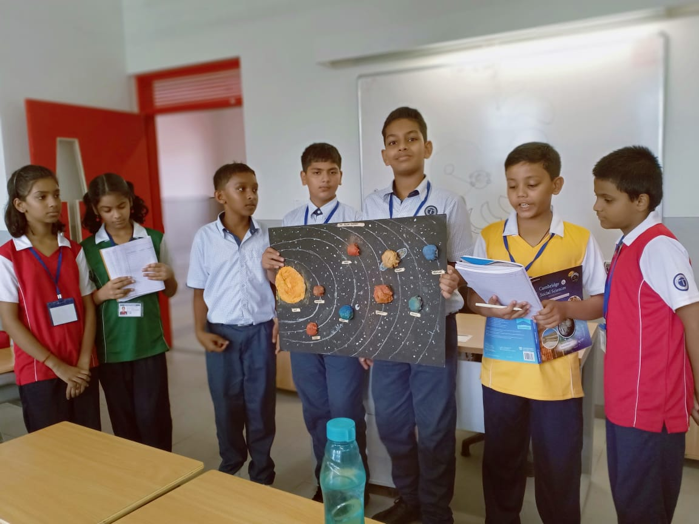

To be able to deliver effectively on our vision and our educational mission would not have been possible without the state of the art infrastructure we have invested into. The school makes sure the right facilities are made available to both our students as well as teachers to make our dream come true.
The library is one of the assets of our school. It is a treasure house of knowledge, past and present. Gilded volumes decorate the glass chests. There are different shelves for different languages. Thus you can find books in Hindi, English, Marathi and so on. For each language books available may belong to any one of the following heads – drama, prose, poetry etc. There are also a number of reference books to help students understand subjects in a better and a well-detailed manner. The library is very well equipped and contains a collection of national dailies, magazines etc. The library is very well utilized both by the students and the members of the staff.
The Lodha World School facilitates learning through audio-visual classrooms. In
addition to learning from subject teachers, students enjoy learning from videos
showed on the screens installed in every classroom.

Each classroom comprises of an interactive table monitor connected to a projector
and speakers.
The school boasts of well-equipped laboratories for the sciences, maths as well as for languages and computers. The role of the laboratory is central since the students must construct their own understanding of the subject ideas. Performing experiments help students learn techniques and reinforce textbook concepts.
An experiential learning studio is an innovative and pioneering concept. It is the physical space that allows for integrating the curriculum, manipulative sets, the coaches and the students for a cohesive implementation of the program. Students are encouraged to build their own understanding of the world and acquire knowledge through vivid experiences. They are given the freedom to reflect on those experiences by asking questions, exploring their surroundings and making an assessment of their discoveries.  Thus, by applying themselves, challenging their minds, and making connections, students build the foundations to become autonomous learners, a key skill much needed in an unpredictable and dynamic world.
Books are not the only way students learn. Sports facilities and activity rooms are dedicated specifically for students to pursue talents and interests. This ensures that we are able to provide holistic education to your child so that they excel in their hobbies as well.